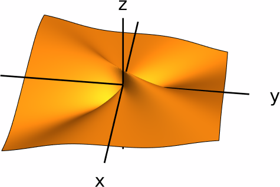
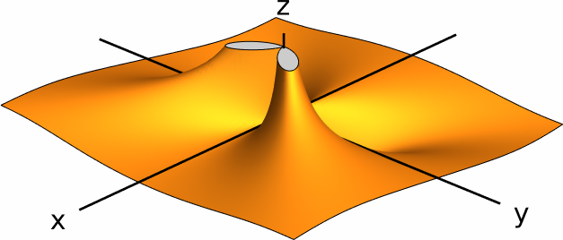
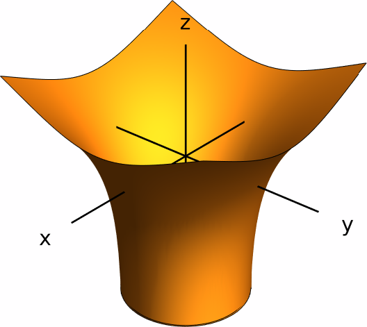

Limits and Continuity
In this section we introduce the notion of limit for a function of several variables. To make things easier, we will discuss this concept for functions of two variables, although all of the considerations that we will make here are valid for functions of any number of variables.
Limits of Functions of Two Variables
Let's start by giving an intuitive definition of the limit of a function of two variables.
While this definition will be good enough for our purposes, it is worth mentioning that there is a more formal version of the above definition, which reads as follows:
For functions of several variables, there are not many techniques that allow us to compute their limits in general. For the purposes of this course, it will be enough to discuss the most elementary properties of limits (that is, the limit laws) and to learn techniques to show when a limit does not exist.
Limits along Paths
Recall from single variable calculus that, if $f(x)$ is a function of one variable, then the limit $\lim_{x\to a}f(x)$ exists and is equal to $L$ if and only if the one-sided limits $\lim_{x\to a^+}f(x)$ and $\lim_{x\to a^-} f(x)$ both exist and are equal. The reason for this is that, in the real line, you can either approach a number $a$ from the left or from the right. However, in two (or more) dimensions, the situation becomes more complicated, as there are infinitely many ways to approach a point $(a,b)$ in the plane. To make this idea more precise, we need to introduce the notion of path.
Note that working with a path in $\RR^2$ is essentially the same as working with two single-variable functions at the same time. One can also define the concept of path in $\RR^n$ (for any $n$) accordingly.
Now, we can also define the concept of the values of a function along a path:
Now, suppose that $f(x,y)$ is a function of two variables, $(a,b)$ is a point, and that \[ \lim_{(x,y) \to (a,b)} f(x,y) = L. \] Then, if $c(t)$ is a path in $\RR^2$ that approaches $(a,b)$ as $t$ approaches some number $t_0$, that means that the values of $f(c(t))$ have to get as close as we want to $L$ as $t$ approaches $t_0$. In other words, \[ \lim_{t \to t_0} f(c(t)) = L. \] Since the limit of a function (if it exists) is unique, this gives us a criterion to determine when a function does not have a limit.
Solution.
Let us consider first the values of the function \[ f(x,y)=\frac{xy^3}{x^4+y^4} \] along the $x$-axis. Since the $x$-axis can be described by the path $c_1(t)=(t,0)$, we see that the function $f(x,y)$ along the $x$-axis is given by \[ f(t,0)=\frac{0}{t^4}=0. \] We now approach $(0,0)$, which amounts to letting $t\to 0$, to obtain \[ \lim_{t \to 0} f(t,0)=0. \] Now, we look at the values of $f$ along the line $y=x$. We can trace this line by means of the path $c_2(t)=(t,t)$. In this case, the function $f(x,y)$ along this line becomes \[ f(t,t)=\frac{t^4}{t^4+t^4}=\frac{t^4}{2t^4}=\frac{1}{2}. \] As we approach $(0,0)$ by letting $t\to 0$, we get \[ \lim_{t\to 0} f(t,t)=\frac12. \]
Because we have obtained two different limits of $f(x,y)$ by moving along two different paths, we conclude that the limit \[ \lim_{(x,y) \to (0,0)} \frac{xy^3}{x^4+y^4} \] does not exist.

Solution.
Let \[ g(x,y)=\frac{xy^2}{x^2+y^4}. \] We can try to compute the values of $g(x,y)$ along any line of the form $c_1(t)=(t,mt)$. In this case, we see that \[ g(t,mt)=\frac{m^2t^3}{t^2+m^4t^4}=\frac{m^2t}{1+m^4t^2}, \] which approaches $0$ as $t\to 0$.
The above argument shows that $g(x,y)$ approaches $0$ along any line that passes through $(0,0)$, except for the $y$-axis. However, it is also easy to show that $g(x,y)$ approaches $0$ along the $y$-axis as well. At any rate, this is not enough to conclude that the limit in question exists. Indeed, if we take the path $c_2(t)=(t^2,t)$, we see that $g(x,y)$ along the path $c_2(t)$ is given by \[ g(t,t^2)=\frac{y^4}{2y^4}=\frac{1}{2}, \] which approaches $\frac{1}{2}$ as $t\to 0$. We conclude that the limit $\lim_{(x,y) \to (0,0)} g(x,y)$ does not exist.

Limit Laws
In this section we present the basic laws of limits. These laws are essentially the same as those that we already know from functions of a single variable.
- (Sum law) \[ \lim_{(x,y) \to (a,b)} f(x,y)+g(x,y) = L_1+L_2. \]
- (Difference law) \[ \lim_{(x,y) \to (a,b)} f(x,y)-g(x,y) = L_1-L_2. \]
- (Product law) \[ \lim_{(x,y) \to (a,b)} f(x,y)g(x,y) = L_1L_2. \]
- (Quotient law) \[ \lim_{(x,y) \to (a,b)} \frac{f(x,y)}{g(x,y)} = \frac{L_1}{L_2}, \] provided that $L_2\neq 0$.
Let us see an application of these laws. A polynomial in two variables is a sum of functions of the form $cx^ny^m$, where $c$ is a constant. Due to the sum and product laws, we see that if $p(x,y)$ is a polynomial, then \[ \lim_{(x,y) \to (a,b)} p(x,y)=p(a,b). \] Similarly, a rational function is a quotient of two polynomials. Thus, if $f(x,y)=\tfrac{p(x,y)}{q(x,y)}$ is a rational function, then \[ \lim_{(x,y) \to (a,b)} f(x,y)=f(a,b) \quad\textsf{whenever}\quad q(a,b)\neq 0. \] This is a consequence of the sum, product and quotient laws.
Continuity
Suppose $f\colon D\to \RR$ is a function of a single variable. If $a$ is an element of $D$, recall that $f$ is continuous at $a$ if it satisfies $\lim_{x \to a} f(x)=f(a)$. This definition can also be extrapolated to functions of two (or more) variables
Because of the limit laws, we can immediately establish the following fact:
- The function $f+g$ given by \[(f+g)(x,y)=f(x,y)+g(x,y)\] is also continuous at $(a,b)$.
- The function $f-g$ given by \[(f-g)(x,y)=f(x,y)-g(x,y)\] is also continuous at $(a,b)$.
- The function $fg$ given by \[(fg)(x,y)=f(x,y)g(x,y)\] is also continuous at $(a,b)$.
- If $g(a,b)\neq 0$, then the function $\frac{f}{g}$ given by \[\left(\frac{f}{g}\right)(x,y)=\frac{f(x,y)}{g(x,y)}\] is also continuous at $(a,b)$.
We can also compose a function of two (or more) variables with a function of a single variable. If $f(x,y)$ is a function of two variables and $g(t)$ is a function of one variable, we define the composite function $g\circ f$ to be the function defined by the equation \[ (g\circ f)(x,y)=g(f(x,y)). \]
It turns out that taking the composite of two continuous functions also yields a continuous function:
Solution.
First we need to know the domain of $f$. Since the natural logarithm is only defined for positive real numbers, the formula $\ln(x^2+y^2-1)$ gives a well-defined number if and only if $x^2+y^2-1>0$. Therefore, the domain of $f$ is \[ \dom(f) = \big\{(x,y)\mid x^2+y^2-1>0\big\} = \big\{(x,y)\mid x^2+y^2>1\big\}, \] which is the outside of the unit circle in the plane.
We now decide whether $f(x,y)$ is continuous on its domain. Note that $f(x,y)$ can be viewed as the composition of the functions $g(x,y)=x^2+y^2-1$ (which is continuous everywhere) and $h(t)=\ln(t)$ (which is continuous at every positive number). Therefore, $f=h \circ g$ is continuous because it is the composition of two continuous functions.
In conclusion, the function $f(x,y)$ is continuous on the set \[ \big\{(x,y)\mid x^2+y^2>1\big\}. \]
